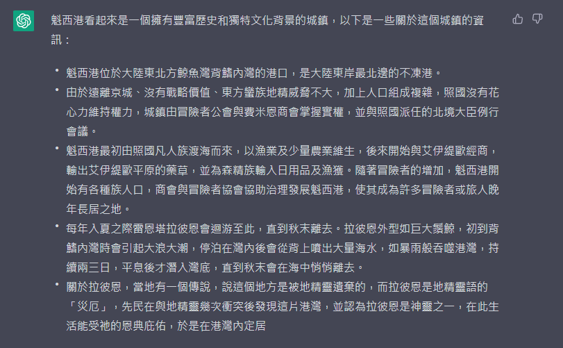
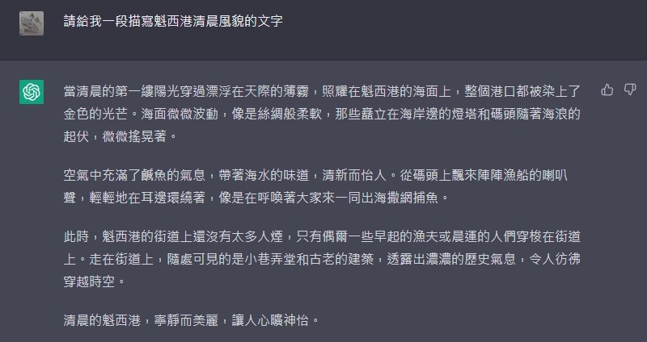

雖然一年前就有在當課金玩家給Openai充錢拿ChatGPT 4.0改論文，但一直沒時間拿它當娛樂工具。今天遲來地玩了下可餵養數據供用戶自製bot的CustomGPT，嘗試了幾個我覺得可能讓它協助寫小說的功能，也餵了自己的小說給它，想和它討論看能不能得到回饋。
先上點我個人對AI的心得：
「AI是工具，至少目前為止都還是，你如果擔心自己被取代，那不過是因為你至今都只是被當作一個可替代的工具，而你發現AI做的比你好，還比你便宜。」
進入正題，首先我寫的輕小說屬於日式異世界奇幻（沒有轉生）寫作策略上屬於慢節奏、著重文化描寫、花心力設計具特色的人物、城市、文化......等等。
我第一個想嘗試的，是看到過不少洽友提到只寫世界觀和設定，想讓ChatGPT幫忙寫小說，所以我把其中一個城市的大段文字設定（無bullet point）餵給了他。
它立刻展現出了它的摘要癖（後來發現，只要沒有特別要求，餵它原創文章它八成都會自動做bullet point摘要）

可以發現它雖然摘要形式做得不錯、文筆流暢通順，但就已經掉了不少資訊了。
我接著嘗試讓它以此為底寫一小段：

之後我還嘗試過不同引導方式，大略上可以總結以下問題：
1. ChatGPT很會摘要，但摘要過程中容易漏掉一些我為了風味或美感所設計的東西，並且如預期的，這件事情在寫奇幻小說時候尤其嚴重，因為奇幻小說的設定有太多原創，它找不到相應的知識庫，就很難對這些元素做出反應或甚至使用。
啊我想要的奇幻元素都出不來，或沒辦法正確出來，那哪還稱得上寫異世界奇幻小說......
2. 到頭來，ChatGPT的文字也只是流暢通順，就只有這樣。
它超級擅長寫「及格」的文章，但你很難在餵給他架空設定同時，又要求它用特定風格書寫，更甚至進階一點刻意改變文風去呈現急湊或緩慢的故事節奏。
單純以這點來說，它很會寫小說嗎？對，但更精準一點，是很會寫流水帳小說，並且它的流水帳小說會比很多網路小說文筆還好。
然而讓它寫更長一點的內容時產出來的成品是很值得擔憂的。
3. 因為它根本沒辦法生成符合我要求的文章，我就沒有讓它寫更長了，然而從第二個實驗的結果來猜測，我對4.0模型目前對長篇文章的掌握程度是極度悲觀的。